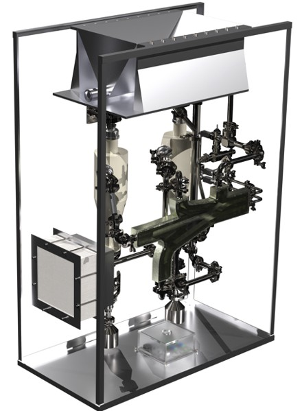
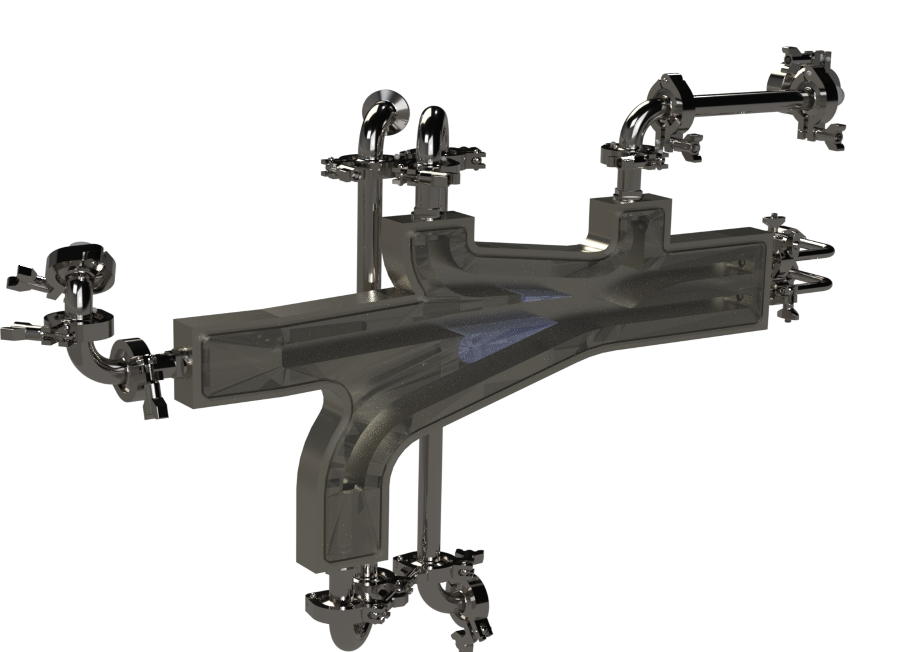
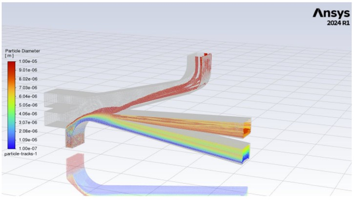

Senior capstone design project in which I designed a small-scale powder classification system to target and classify a range of particle sizes in order to create a higher powder uniformity for battery anode coating materials, to ultimately increase battery performance.



Deliverables include:
- Took team lead role to break down project requirements into concise, manageable deliverables, create task timelines using Gantt Charts, and assign tasks to members based on prior experience and preference. Led meetings to drive communication across sub-systems.
- Led mechanical design of unique air classification system using SolidWorks PDM.
- Led mechanical design of motor assembly to facilitate actuation of two mechanisms to vary classifier internal geometry and consequently allowing for target particle size range variability.
- Conducted simulation testing on classifier design using SolidWorks Particle Flow and Ansys Fluent CFD.
Role
Team Lead
Location
Victoria
Tools
SolidWorks PDM, Ansys Fluent, KiCAD, Microsoft Office Suite